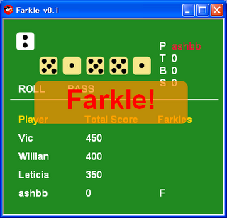

Ruby the Red Gem of Programming
This is an archived post This is an archived post
Previous
Index
Next
Farkle on Shoes v0.1
August 13 2009, 3:26 AM
by Victor Goff
Hey, first release of
Farkle on Shoes!
Look at
online demo
... then download and play on your own. :-D
# farkle_on_shoes1.png

Have fun,
ashbb
38 views and 0 responses